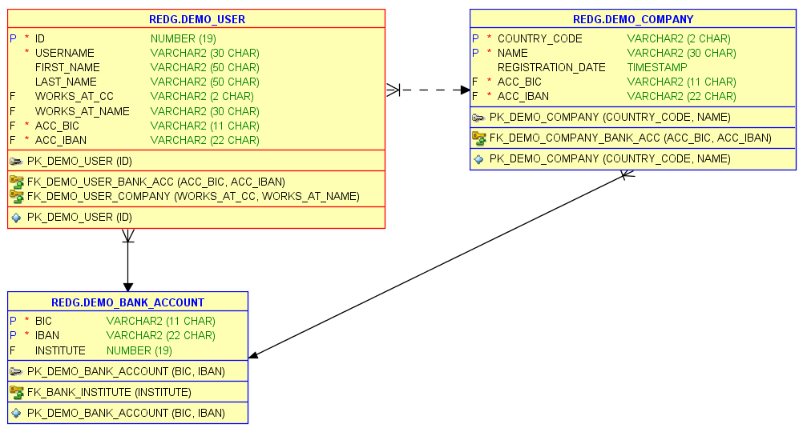
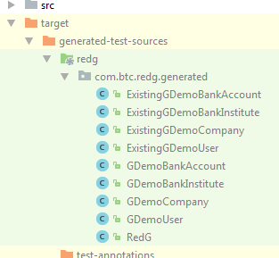

Getting started¶
This chapter will guide you through your first project with RedG. You'll use RedG via the RedG Maven Plugin and integrate it into a unit test.
Installation and configuration¶
If your project can process Maven artifacts, the installation is quite straightforward. RedG is available on Maven Central. The newest stable version is 2.0 See here for an overview of all RedG Maven artifacts and the newest versions.
Maven¶
Add the dependency for the redg-runtime. If you want to use the visualization feature to debug your application, include jackson-core and jackson-databind.
Include junit for the unit tests.
<dependencies>
<dependency>
<groupId>de.yamass.redg</groupId>
<artifactId>redg-runtime</artifactId>
<version>2.0</version>
<scope>test</scope>
</dependency>
<!-- optional, for visualization only -->
<dependency>
<groupId>com.fasterxml.jackson.core</groupId>
<artifactId>jackson-core</artifactId>
<version>2.9.7</version>
<scope>test</scope>
</dependency>
<dependency>
<groupId>com.fasterxml.jackson.core</groupId>
<artifactId>jackson-databind</artifactId>
<version>2.9.7</version>
<scope>test</scope>
</dependency>
<!-- for the unit tests -->
<dependency>
<groupId>junit</groupId>
<artifactId>junit</artifactId>
<version>4.11</version>
<scope>test</scope>
</dependency>
</dependencies>
Now include the RedG Maven Plugin (redg-maven-plugin) and configure it. You might also need a JDBC driver if you want the schema analysis to run against a database other than H2. This driver needs to be added as a plugin dependency, not as a project dependency.
<plugin>
<groupId>de.yamass.redg</groupId>
<artifactId>redg-maven-plugin</artifactId>
<version>2.0</version>
<executions>
<execution>
<id>redg-generate</id>
<phase>generate-test-sources</phase> <!-- This plugin generates sources for the test code -->
<goals>
<goal>redg</goal>
</goals>
<configuration>
<!-- Provide database connection information. We'll just use a H2 in-memory database here -->
<jdbcDriver>org.h2.Driver</jdbcDriver>
<connectionString>jdbc:h2:mem:redg</connectionString>
<username>sa</username>
<password>sa</password>
<!-- Alternative Oracle configuration:
<jdbcDriver>oracle.jdbc.OracleDriver</jdbcDriver>
<connectionString>jdbc:oracle:thin:@localhost:1521:XE</connectionString>
<username>system</username>
<password>******</password>
-->
<enableVisualizationSupport>true</enableVisualizationSupport> <!-- if true, needs jackson dependencies -->
<sqlScripts> <!-- the SQL scripts to run before schema analysis -->
<param>src/test/resources/create-schema.sql</param>
</sqlScripts>
<customTypeMappings>src/test/resources/mappings.json</customTypeMappings> <!-- type mappings. Will be explained later -->
<schemaRegex>REDG</schemaRegex>
</configuration>
</execution>
</executions>
<dependencies>
<!-- JDBC driver and SchemaCrawler extension, only if not using H2. Entry depends on DBMS -->
<!-- Example for Oracle DB:
<dependency>
<groupId>com.oracle</groupId>
<artifactId>ojdbc6</artifactId>
<version>11.2.0.3</version>
</dependency>
<dependency>
<groupId>us.fatehi</groupId>
<artifactId>schemacrawler-oracle</artifactId>
<version>15.01.06</version>
</dependency>
-->
</dependencies>
</plugin>
This is a minimal configuration for the Maven plugin. RedG will use an in-memory H2 database named redg. Before schema analysis the create-schema.sql script will be executed. This script will create the complete database schema. The plugin will analyze all tables within the REDG schema and generate code for these.
The generated source code will have visualization support, so you can easily debug and visualize your test data.
To show how the generated code can be customized, a custom type mapping is provided via a JSON file called mappings.json.
For a detailed explanation of all parameters head over to here.
Continue with the preparation after you're done here.
Gradle¶
Currently there is no Gradle plugin to generate the RedG entity code. See here for other ways to integrate the RedG code generator in your project.
The RedG runtime can be included as a dependency.
dependencies {
testCompile group: 'de.yamass.redg', name: 'redg-runtime', version '2.0'
// optional, only for visualization support
testCompile group: 'com.fasterxml.jackson.core', name: 'jackson-core', version: '2.9.7'
testCompile group: 'com.fasterxml.jackson.core', name: 'jackson-databind', version: '2.9.7'
// testing framework
testCompile group: 'junit', name: 'junit', version: '4.11'
}
Preparation¶
With RedG installed and set up, you can now prepare everything for the first code generation. If you followed the steps above, you'll need two more files before RedG can generate code for your database schema: src/test/resources/create-schema.sql and src/test/resources/mappings.json.
SQL Schema Script¶
In order to generate the code for the schema, RedG needs a live database running that schema. As this example uses a H2 in-memory database, all the tables have to be created first. Create the file src/test/resources/create-schema.sql and fill it with your DDL statements.
If you don't yet have a database schema or just want to tets RedG, feel free to use this little demo schema:
CREATE SCHEMA REDG;
CREATE TABLE REDG.DEMO_BANK_ACCOUNT (
BIC VARCHAR2(11 CHAR) NOT NULL,
IBAN VARCHAR2(22 CHAR) NOT NULL,
CONSTRAINT pk_DEMO_BANK_ACCOUNT PRIMARY KEY (BIC, IBAN)
);
CREATE TABLE REDG.DEMO_COMPANY (
COUNTRY_CODE VARCHAR2(2 CHAR) NOT NULL,
NAME VARCHAR2(30 CHAR) NOT NULL,
REGISTRATION_DATE TIMESTAMP,
ACC_BIC VARCHAR2(11 CHAR) NOT NULL,
ACC_IBAN VARCHAR2(22 CHAR) NOT NULL,
CONSTRAINT PK_DEMO_COMPANY PRIMARY KEY (COUNTRY_CODE, NAME),
CONSTRAINT FK_DEMO_COMPANY_BANK_ACC FOREIGN KEY (ACC_BIC, ACC_IBAN) REFERENCES DEMO_BANK_ACCOUNT (BIC, IBAN)
);
CREATE TABLE REDG.DEMO_USER (
ID NUMBER(19) NOT NULL,
USERNAME VARCHAR2(30 CHAR) NOT NULL,
FIRST_NAME VARCHAR2(50 CHAR),
LAST_NAME VARCHAR2(50 CHAR),
WORKS_AT_CC VARCHAR2(2 CHAR),
WORKS_AT_NAME VARCHAR2(30 CHAR),
ACC_BIC VARCHAR2(11 CHAR) NOT NULL,
ACC_IBAN VARCHAR2(22 CHAR) NOT NULL,
AGREED_TO_NEWSLETTER NUMBER(1),
CONSTRAINT pk_DEMO_USER PRIMARY KEY (ID),
CONSTRAINT fk_DEMO_USER_COMPANY FOREIGN KEY (WORKS_AT_CC, WORKS_AT_NAME) REFERENCES DEMO_COMPANY (COUNTRY_CODE, NAME),
CONSTRAINT fk_DEMO_USER_BANK_ACC FOREIGN KEY (ACC_BIC, ACC_IBAN) REFERENCES DEMO_BANK_ACCOUNT (BIC, IBAN)
);
This SQL code will create a schema that looks like this:  The demo schema
Type Mappings¶
When analysing a database schema, RedG always tries to find an appropriate Java data type for a column. There are three cases, where this might not be enough:
- You want a different Java data type that still represents the same database data type (eg.
longinstead ofBigDecimalforNUMBER(10)) - RedG cannot understand the semantic meaning of a column data type (eg.
NUMBER(1)orCHAR(1)forboolean) - You want to plug in a custom, maybe even far more complex, data type and use it instead of the default types
If this happens, you can create a custom type mapping. When using the Maven plugin, you can simply specify that type mapping in a JSON file. For the demo schema from above you can use the following type mapping and save it in the file src/test/resources/mappings.json:
{
"REDG.DEMO_USER": {
"ID": "Long",
"AGREED_TO_NEWSLETTER": "Boolean"
},
"REDG.DEMO_COMPANY": {
"ID": "Long",
"REGISTRATION_DATE": "java.time.LocalDateTime"
}
}
In this example, the DEMO_USER table gets its ID mapped as a Long (always use wrapper classes, not primitive types) and AGREED_TO_NEWSLETTER as a Boolean.
The DEMO_COMPANY gets the same mapping for the ID and gets the REGISTRATION_DATE as a LocalDateTime. For each class not in java.lang you have to provide the fully qualified class name.
If your JDBC driver is not able to perform the transformations you want (Boolean to NUMBER(1) or LocalDateTime to TIMESTAMP), you have to provide a custom PreparedStatementParameterSetter during test runtime. If you want to generate SQL statements, you might need a custom SQLValuesFormatter during test runtime.
Code generation¶
By now everything is ready for the first round of code generation. If you are using Maven, either run your whole test-suite with mvn test or just RedG with mvn redg:redg@redg-generate. If you are using Gradle, run your custom solution or wait until the release of the Gradle plugin. If no error occured, you should find the generated sources in target/generated-test-sources/redg.
 The generated code
Test Data Specification¶
Now that RedG has generated the entity classes, you can create a RedG instance.
A good approach is to create a factory that will create RedG instances, so you don't have to configure the RedG instance every time you need one.
An example for some test data:
public class MyRedGFactory {
public RedG createRedG() {
RedG redG = new RedG();
redG.setDefaultValueStrategy(createDefaultValueStrategy());
return redG;
}
private DefaultValueStrategy createDefaultValueStrategy() {
DefaultValueStrategyBuilder builder = new DefaultValueStrategyBuilder();
builder.whenColumnNameMatches("ID")
.thenUseProvider(new IncrementingNumberProvider());
builder.whenTableNameMatches(".*CARD").andColumnNameMatches("TYPE")
.thenUse("MASTERCARD");
builder.when(columnModel -> columnModel.getDbFullTableName().equals("CCM.CREDITCARD.UUID"))
.thenCompute((columnModel, expectedType) -> UUID.randomUUID().toString());
// ...
return builder.build();
}
}
Now you can model your test data. You might end up inlining the test data into your unit tests if it is not too complex.
To make RedG insert the modeled data into the database, call AbstractRedG.insertDataIntoDatabase(...). In most cases this dead simple approach is all you need.
Example:
import ...;
public class DemoTest {
@Test
public void testStuff() throws Exception {
// instantiate RedG
RedG redG = new MyRedGFactory().createRedG();
// create some test data
GDemoBankAccount companyBankAccount = redG.addDemoBankAccount()
.iban("DE13109817441665870952");
GDemoCompany smallCompany = redG.addDemoCompany(companyBankAccount)
.countryCode("DE")
.name("Spielwarenfachgeschäft Müller");
redG.addDemoUser(redG.dummyDemoBankAccount)
.username("Diana_Dummy")
.company(smallCompany);
// insert the data into the database using a javax.sql.DataSource
new DemoTestData().getDataSet().insertDataIntoDatabase(dataSource);
// perform your actual test against the database...
...
}
}
Debugging with the visualizer¶
If your generated RedG entity classes have the visualization support enabled, debugging RedG is extremely
simple and comfortable. Add a breakpoint wherever you want to inspect the current RedG dataset and let the
code run until there. Once it reached the breakpoint, evaluate the getVisualizationJson() method on your RedG
main object. This method will return a big JSON string. Copy it into your clipboard or export it into a file
and paste/drag it into the RedG Visualizer.